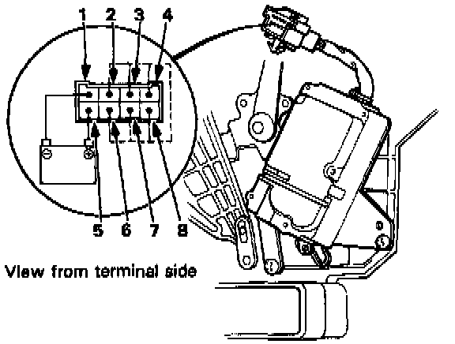

Component Test

1. Connect the battery positive terminal to the 5 terminal of the function control motor and negative to the 1 terminal.
2. Using a jumper wire, short the 2 terminal to the 3, 4, 6, 7, and 8 terminals in that order.
- The motor should run each time the short circuit is made.